Journey 02 · Hunedoara Note 8 of 12 Field Note
Small Museum, Big Past
Communism Museum, Hunedoara
A short walk from the tourist center near Corvin Castle, tucked along the river and easy to miss if you are not looking carefully, sits two small buildings that house Hunedoara’s Communist Museum.
Short, of course, by the standards of European walking distance. However, I am becoming more accustomed to the idea of walking most places that are within a few kilometers. In this case, the walk along the river was beautiful, with a wide walking path, ducks and locals enjoying the beautiful weather.
The juxtaposition of the historic town area I had just left was stark. Behind me were Corvin Castle rising over the buildings, the beautiful Catedrala Eroilor, and the promenade. Ahead, industrial and brutalist buildings dominated: standard geometric forms, overgrown complexes and buildings that looks half-abandoned.
I nearly walked past them, certain that my map was not oriented correctly.
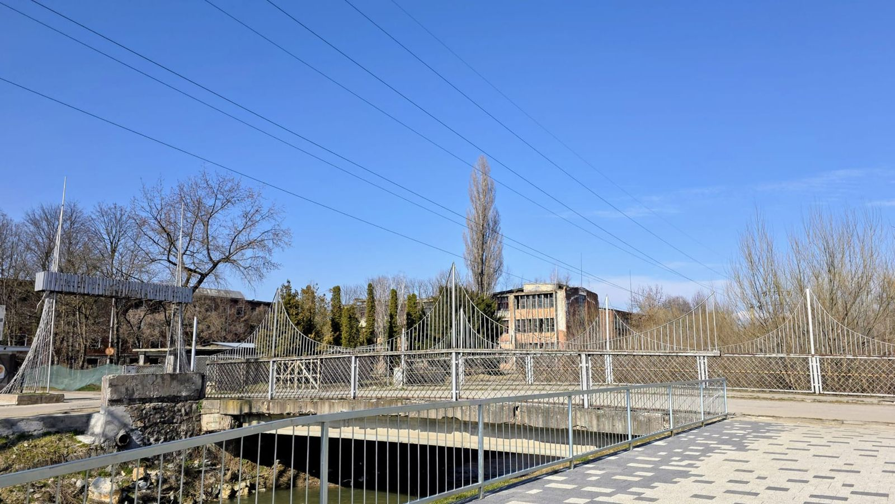
From the outside they looked like older utility buildings, perhaps a guard shack and a small house. There were no large signs, no tour buses, no crowd of visitors. Just two quiet structures near the water.
When I arrived, the museum’s curator was sitting outside along the riverbank watching the water flow. At first I assumed he was simply another passerby enjoying the afternoon. Only later did I realize he was the person who maintained the museum.
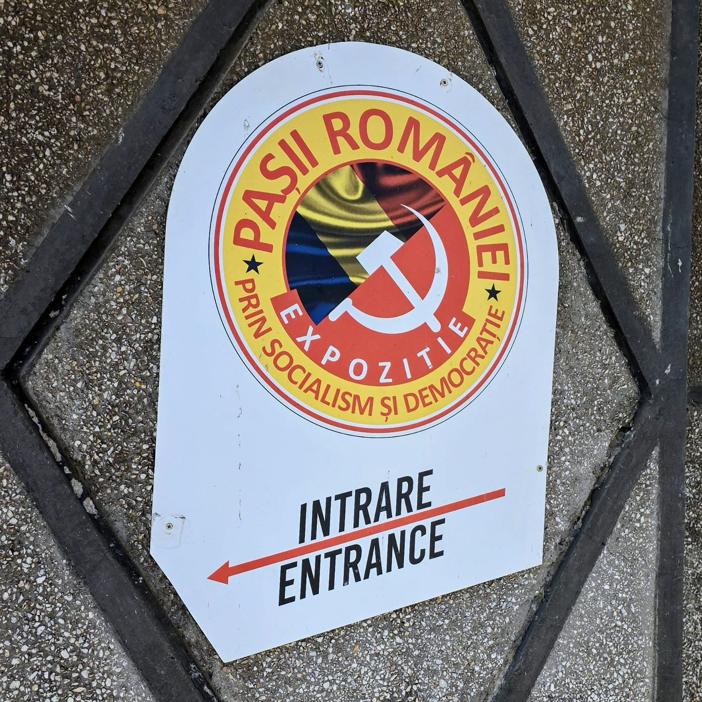
He greeted me, and gave me a personal overview of the area, starting with the location of the museum. The first building displays the industrial story of Hunedoara. During the communist era the city was one of Romania’s major steel-producing centers, and the Hunedoara steel works were among the largest industrial complexes in the country. At its height, thousands of workers passed through the factory gates each day. The plant shaped the city’s economy, its growth, and the rhythm of daily life.
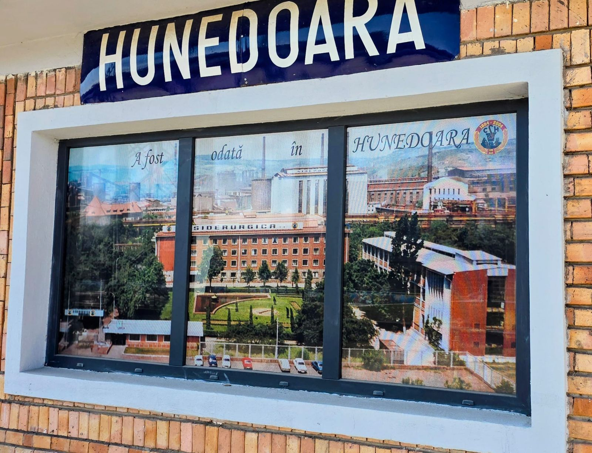
Then the system that sustained it collapsed. The steel works closed over time, and the once-bustling industrial area was largely abandoned. What remains today are fragments of that world: buildings, photographs, tools, uniforms, and the memories of people who lived through it.
Interestingly, the museum itself does not try to interpret this history for you. Instead, it presents objects, largely without individual comment. It is up to you, as the viewer, to determine what messages may or may not be intended, and what story is being told. There is a curator statement to read, but that is the extent of the guidance.
A recreated classroom from the communist period. Mannequins dressed in military uniforms from different decades. A small grocery store display showing everyday consumer goods. A living room scene complete with a television and a glass fish ornament resting on top, apparently a common decoration of the time.
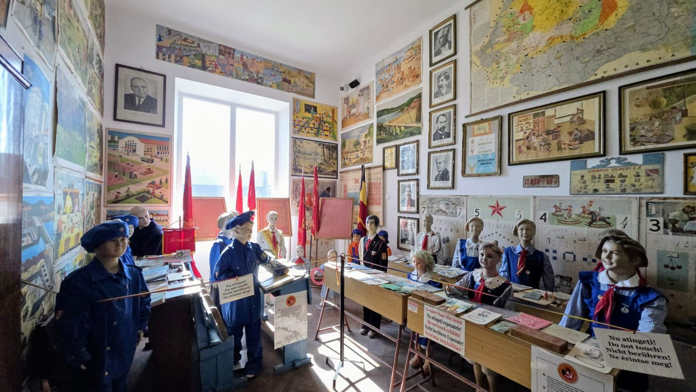
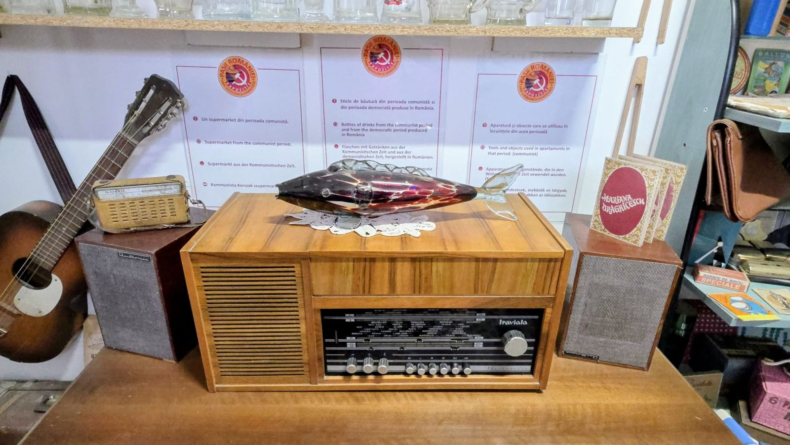
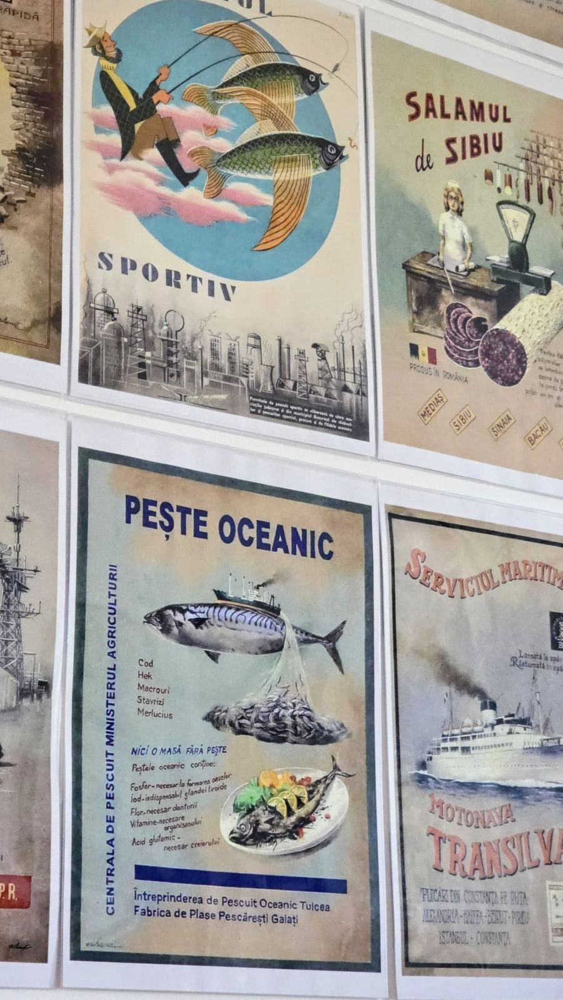
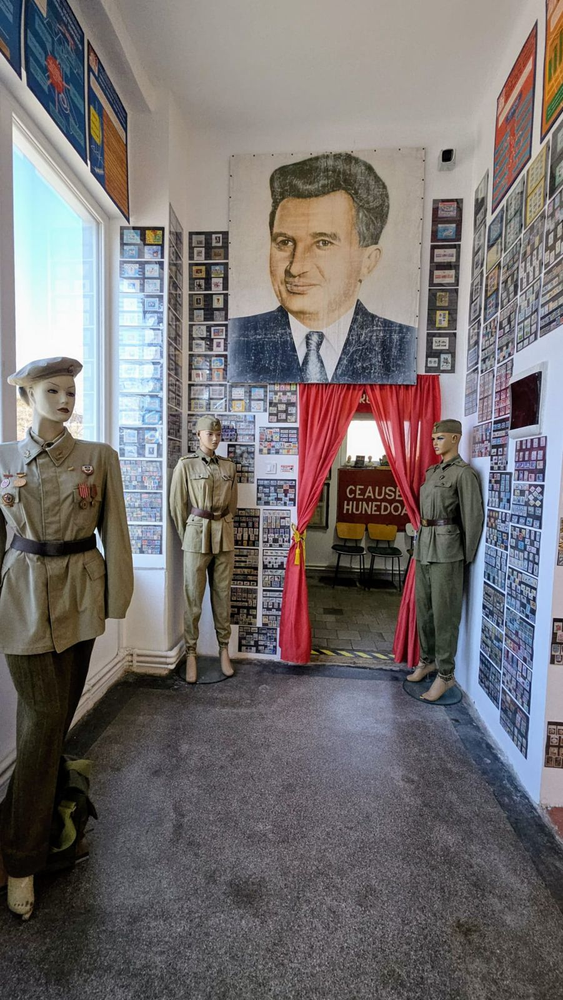
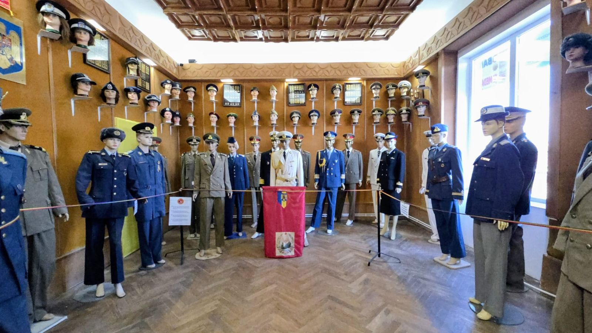

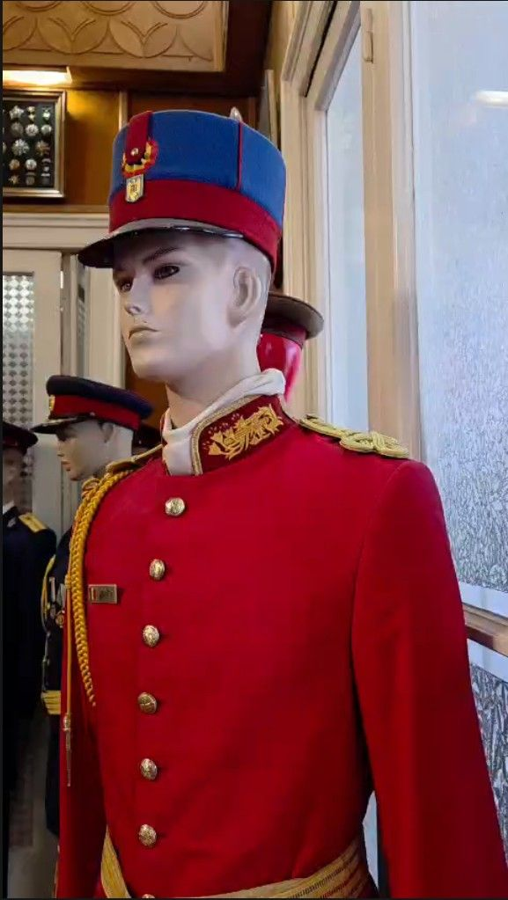
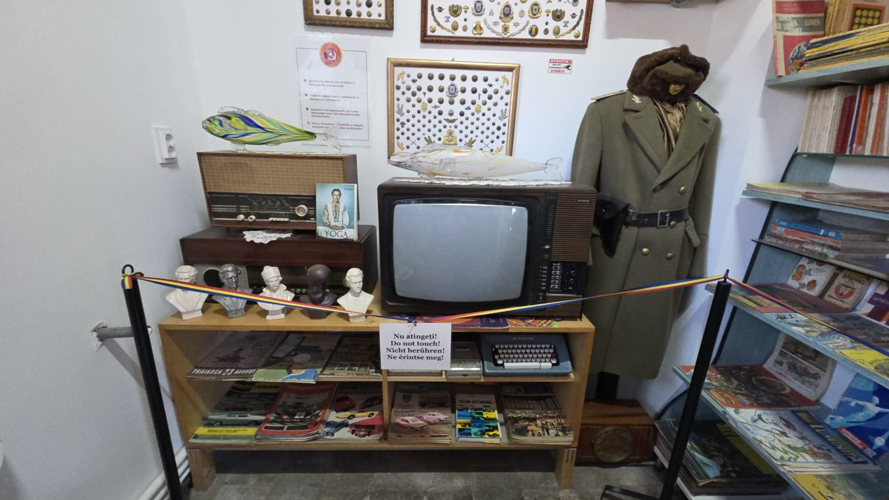
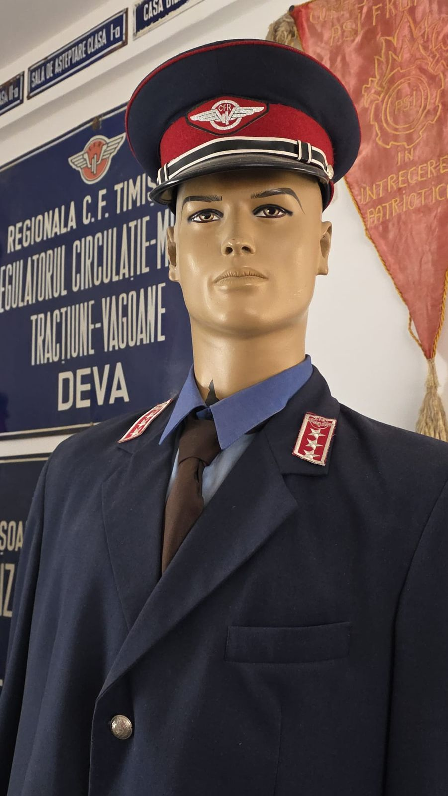
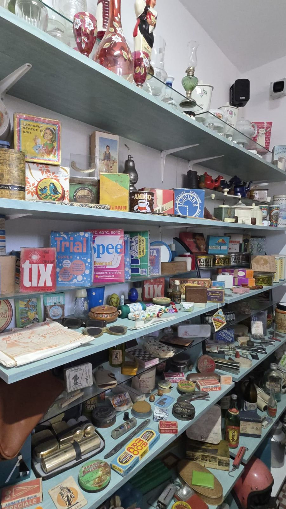
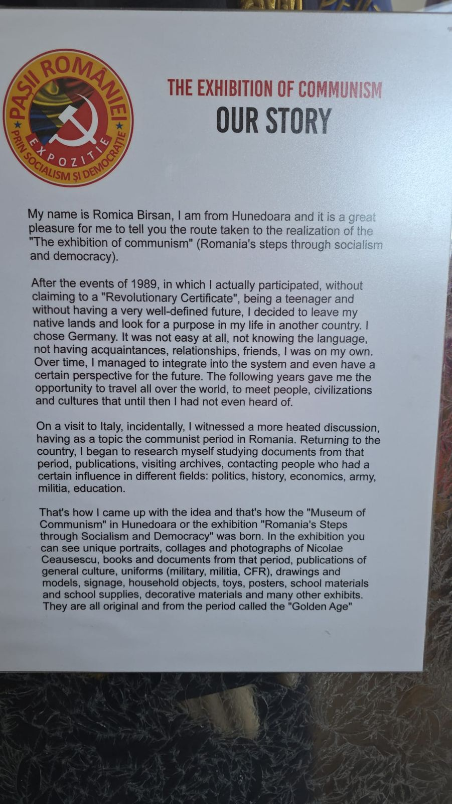
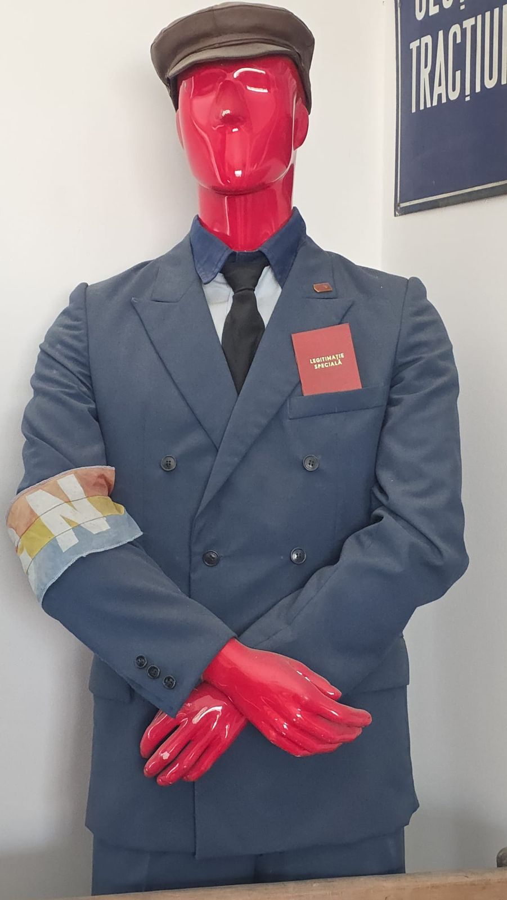
Labels, if present, are brief and factual. They simply identify what you are looking at.
“This room recreates a typical communist-era classroom.”
“This display shows uniforms used by the Romanian military forces.”
Walking through the rooms can feel slightly uncanny. The mannequins stare out silently, all in different uniforms. The materials and design shift from earlier decades toward something that begins to resemble modern military clothing in some areas, others seem pulled directly from schoolbook illustrations of the past. Before leaving me to explore at my leisure, the museum guide had turned on a soundtrack of popular communism music, adding to the overall feeling of uncanny history as I explored.
One room is dedicated to Nicolae Ceaușescu, a huge banner and military mannequins flanking the entrance to a room filled with items from his house. Turns out that the second, larger building now housing the museum was once the home where he and his wife stayed when visiting the area.
And then there was the toy room.
Glass cases lined the walls, filled with toys from multiple decades. Many of them looked surprisingly familiar: dolls, LEGO building sets, plastic figures, small vehicles, plastic horses with long flowing manes and tails.
One of the horses stopped me for a long minute. I had owned a toy horse just like it as a child. I remember brushing its mane and tail for hours when I was younger, and I was immediately caught in the memory of sitting in my bedroom when I was younger creating complex soap operas for my dolls to act out.
Seeing “my” toys behind glass in a museum felt strangely disorienting.
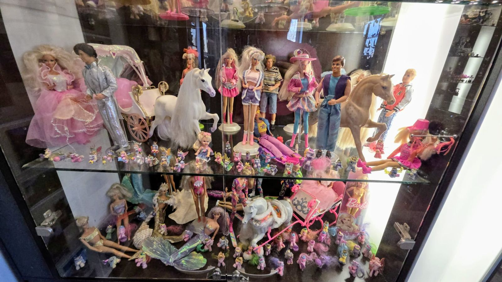
There is something a little unsettling about encountering objects from your own childhood displayed as historical artifacts. Neither the toys nor I feel ancient, and seeing such a common item displayed felt odd. (Look children! Long ago, kids had no screen time or internet and had to entertain themselves with bits of plastic and their imagination!)
For a moment, the toys collapsed the distance between histories for me. I am an elder millennial, so the Cold War, which so often appears in textbooks as a geopolitical struggle between governments, has always felt distant and something that I suppose happened in my childhood but in such an abstract way I never connected it to my lifetime. It had always felt like a historic footnote, completely separated from ordinary life.
Seeing these toys, in the context of this museum, and understanding the time span here included my own early life, was jarring. Suddenly, the history becomes something more ordinary and human, and more immediate.
Children played with toys.
Families decorated their living rooms.
Students sat in classrooms.
Workers passed through factory gates each morning.
While I sat in my bedroom in America playing with plastic horses and dolls and watching Transformers and She-ra on TV, someone my own age was having a completely different experience, and that experience was surrounding me in this museum. And now, only a few decades later, those everyday objects are already being preserved as history.
Up the hill, Corvin Castle tells dramatic stories of medieval kings and battles.
Down by the river, two small buildings preserve the memory of a much more recent past. Both are history; one simply feels much closer to home.
Originally published at fieldnotesfromabroad.com/2026/03/13/small-museum-big-past/